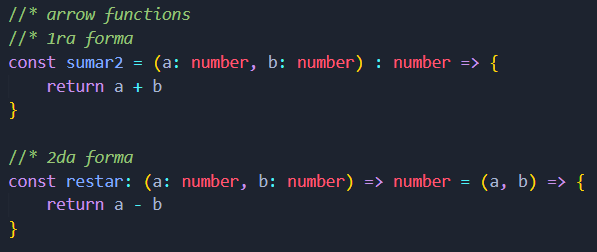
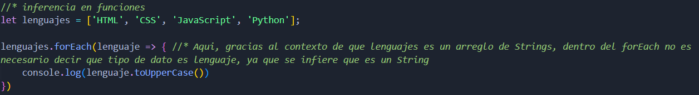

Usando objetos como parámetros
Puede que se necesiten usar objetos como parámetros en alguna función, sin embargo se debe tener cuidado con el tipado en estos casos.
Typescript no realiza ningún cambio importante en el núcleo de funciones de Javascript. Sin embargo, Typescript mejora las funciones con firmas fuertes que podemos utilizar para definir parámetros y tipos de retorno.
Algo que se debe tener en cuenta al momento de usar parámetros, es que si no se le asigna el tipo de dato, implicitámente se le asignara un tipo Any, por lo cual no podrá inferir posteriormente que tipo de dato es o son los parámetros.
Puede que se necesiten usar objetos como parámetros en alguna función, sin embargo se debe tener cuidado con el tipado en estos casos.
Las funciones anteriores retornan por defecto un void, pero usualmente deben retornar algo, y ese algo debe tener un tipo de dato. TypeScript tambien puede inferir el tipo de dato que retorna alguna función.
Cuando en las funciones se usen Callbacks como argumentos, estas tambien se pueden asignar tipos de datos.
Hay 2 maneras de tipar funciones flecha:
En las funciones anónimas, segun el contexto, TypeScript si puede inferir los tipos de datos necesarios de las funciones:
